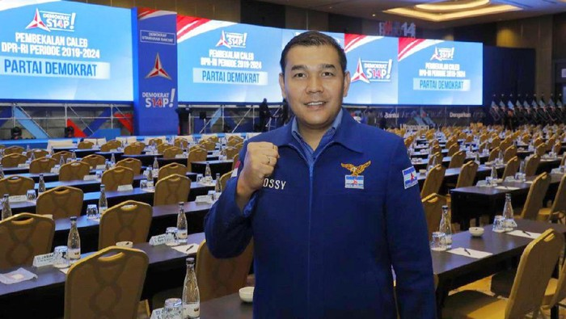
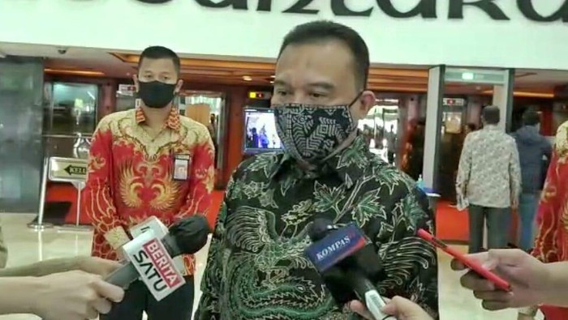

PD Sesalkan Pernyataan Mega, Sebut Tak Bijak Pertanyakan Sumbangsih Milenial

Jakarta - Partai Demokrat (PD) menyesalkan pernyataan Ketum PDIP Megawati Soekarnoputri yang mempertanyakan sumbangsih kaum milenial. PD menilai tak seharusnya Megawati menggeneralisir kaum milenial dengan aksi anarkis sekelompok pemuda pada demo omnibus law UU Cipta Kerja.
"Saya pikir tidak bisa juga kita menggeneralisir bahwa seluruh aksi demo yang terjadi yang diikuti kaum milenial, utamanya terkait Omnibus Law belakangan ini, lantas dianggap semuanya merusak," ujar Kepala Badan Komunikasi Strategis (Bakomstra) DPP PD Ossy Dermawan kepada wartawan, Kamis (29/10/2020).
Megawati menyoroti demo mahasiswa tolak omnibus law UU Cipta Kerja yang berakhir rusuh. Banyak fasilitas umum yang dirusak, bahkan dibakar seperti beberapa halte TransJakarta. Ossy meminta Megawati tak asal tuduh kepada kaum milenial terkait demo anarkis lalu. Ia menyinggung soal kabar penyusup di aksi unjuk rasa mahasiswa yang menyebabkan kericuhan.
"Belakangan beredar pula informasi bahwa yang merusak bukanlah pihak pendemo, melainkan orang-orang yang disusupkan," kata Ossy.
Dia juga menyebut aksi demo mahasiswa menolak omnibus law perlu diapresiasi sebagai niat baik rakyat menyampaikan pesan dan kritiknya terhadap pemerintahan. Ossy menegaskan demonstrasi merupakan hak rakyat yang dilindungiundang-undang.
"Saya pikir juga tidak bijak jika kita mempertanyakan sumbangsih para kaum milenial terhadap bangsa dan negara. Karena bisa saja kaum milenial juga mempertanyakan apa sumbangsih pemerintah bagi kaum milenial dalam menggapai cita-cita mereka di masa depan," ucapnya.
"Yang terbaik, seluruh pihak saling menghargai dan menghormati sehingga didapatkan kehidupan berbangsa dan bernegara yang lebih baik lagi ke depan," tambah Ossy.
Sementara itu Ketua DPP PD Didi Irawadi menilai pernyataan Megawati sangat disesalkan. Ia berharap agar kaum milenial tidak disalahkan dalam demo anarkis beberapa waktu lalu.
"Sangat disesalkan pernyataan ibu Megawati. Silahkan salahkan demo yang anarkis, tetapi jangan tuduh kaum milenial penyebab demo anarkis. Konteks oleh Ibu Megawati sangat keliru dan tidak tepat, demo anarkis dikaitkan dengan milenial," ujar Didi Irawadi terpisah.
PD Sesalkan Pernyataan Mega, Sebut Tak Bijak Pertanyakan Sumbangsih Milenial
Jakarta - Elektabilitas PPP di Survei Indikator Politik turun menjadi nol koma. Turunnya elektabilitas PPP itu dinilai karena adanya sejarah dua eks ketua umumnya Suryadharma Ali dan Romahurmuziy terjerat kasus korupsi.
"Faktornya karena korupsi yang pernah mendera dua ketua umumnya. Pemberitaan terkait korupsi ke PPP membuat partai tersebut menurun elektabilitasnya. Karena bagaimana pun PPP partai Islam. Ketika terkena imbas korupsi mantan ketumnya, membuat PPP tergerus elektabilitas," kata Pengamat Politik dari Universitas Al-Azhar Indonesia, Ujang Komarudin, kepada wartawan, Sabtu (25/10/2020).
Faktor lain, menurut Ujang, adalah munculnya partai Islam baru dengan kemampuan menggaet milenial. Sedangkan PPP, disebutnya, tidak concern ke kaum anak muda Lebih lanjut, terkait caketum PPP, Ujang mengatakan kandidat yang kuat adalah Suharso Monarfa. Dia mengatakan Suharso telah mampu membawa PPP lolos PT di tengah kasus korupsi Romahurmuziy.
"Dia (sebagai Plt Ketum PPP) dianggap sukses membawa PPP masuk Senayan kembali pada Pileg 2019 yang lalu, di tengah kasus korupsi yang mendera Rommy," ujarnya.
Hal yang sama diungkapkan pengamat politik Universitas Pramadina, Hendri Satrio. Dia juga mengatakan PPP saat ini tidak lagi terlihat militan seperti sebelumnya.
"PPP makin lama tidak terlihat lebih militan dibandingkan partai Islam lainnya. Kedua, memang faktor korupsi para ketua itu berpengaruh, secara gamblang berpengaruh terhadap pemilih Islam, kan seperti jadi tradisi tuh Ketum PPP korupsi, makanya pemilih Islam memilih partai Islam itu pilihannya banyak, ada PKS, PAN, PKS, sekarang malah Partai Ummat," ujarnya.
"Jadi banyak pilihannya, jadi kalau PPP tidak membuat terobosan yang memang berbeda dan disukai rakyat, minimal rakyat ingat PPP itu akan susah," lanjut Hendsat. Sama seperti Ujang, Hensat menyebut Suharso-lah yang akan terpilih menjadi ketum. PPP, menurutnya, punya ketergantungan pada posisi pejabat negara yang akan menduduki ketum sehingga, menurutnya, Suharso-lah yang akan terpilih.
"Ini ketergantungan sama pejabat tinggi, jadi kemungkinan besar Suharso yang kuat karena dia yang menjadi pejabat kan," tuturnya.
Sebelumnya, Survei Indikator Politik merilis soal elektabilitas partai politik. Ada beberapa partai yang mengalami kenaikan dan penurunan. PPP jadi salah satu partai yang elektabilitasnya turun hingga di bawah angka nol persen.
Survei dilakukan pada 24-30 September 2020. Sebanyak 1.200 responden dipilih secara acak. Metode survei dilakukan dengan wawancara via telepon dengan margin of error sekitar 2,9% dan tingkat kepercayaan 95%. Seluruh responden terdistribusi secara acak dan proporsional.
Berikut ini paparan perkembangan elektabilitas partai yang dilakukan Indikator Politik pada September jika dibandingkan dengan surveinya pada Juli:
PKB: 5,0% turun menjadi 4,1%.
Gerindra: 17,7% naik menjadi 21,1%
PDIP: 26,3% turun menjadi 25,2%
Golkar: 8,3% turun menjadi 6,7%
NasDem 4,5% turun menjadi 3,1%
PKS: 4,4% naik menjadi 5,9%
PPP: 1,7% turun menjadi 0,6%
PAN: 2% turun menjadi 1,1%
Demokrat: 5,7% naik menjadi 5,9%
PSI: 0,1% naik menjadi 0,3%
Perindo: 0,3% naik menjadi 1%
Garuda: 0,0% naik menjadi 0,1%
Berkarya: 0,1% naik menjadi 0,8%
Hanura: 0,5% turun menjadi 0,4%
Elektabilitas Prabowo Kalah dari Ganjar, Gerindra: Naik Turun Biasa

Jakarta - Elektabilitas Prabowo Subianto kalah dari Ganjar Pranowo di Survei Capres 2024. Gerindra menganggap biasa hasil survei yang dinilai naik turun.
"Survei memang kadang naik kadang turun itu biasa, dan perbedaan hasil survei antarlembaga survei itu juga hal yang biasa," kata Ketua Harian Partai Gerindra, Sufmi Dasco Ahmad, kepada wartawan, Sabtu (25/10/2020).
Lagi pula, Dasco mengatakan pilpres 2024 masih terlalu jauh untuk dipikirkan. Dia mengatakan Ketua Umumnya Prabowo kini tengah fokus menekuni tugas sebagai menteri pertahanan.
"Pilpres juga masih jauh, kami memang fokus Pak Prabowo menekuni tugasnya sebagai menhan dan belum mikir pilpres 2024," ujarnya.
Lebih lanjut terkait elektabilitas Partai Gerindra yang naik drastis, Dasco mengatakan pihaknya tak akan berpuas diri. "Tetap tidak bertinggi hati dan berpuas diri dengan hasil survei dan elektabilitas yang sedang naik drastis," katanya.
Dasco mengatakan Gerindra sempat disebut akan kehilangan suara ketika bergabung dengan pemerintah. Namun, dengan hasil ini menjadi bukti kalau Gerindra tetap solid bekerja mempertahankan suara di seluruh wilayah.
"Karena biar bagaimana ini juga hasil dari kerja kerja seluruh kader partai terutama di lapisan paling bawah, di anak ranting, ranting dan anak kecamatan serta DPC yang tentunya bekerja keras menjalankan apa yang telah digariskan oleh DPP Gerindra di mana pasca pemilu legislatif dan pilpres, kami mengkonsolidasikan diri di tengah isu-isu yang mengatakan bahwa Gerindra ketika koalisi dengan pemerintah suaranya bakal banyak habis," ujarnya.
"Ini yang kami tekankan pada akar rumput untuk tetap bekerja keras, kemudian tetap memelihara konstituen, menjalankan garis besar haluan partai, serta menjaga kekompakan dan soliditas di struktur internal organisasi," lanjutnya. Alhamdulillah kami merasakan hasilnya, namun hal ini tidak membuat kami berpuas diri, dan tetap waspada tetap bekerja keras untuk mempertahankan basis suara dan konstituen yang ada," lanjut Dasco.
Dia menegaskan akan terus melakukan strategi guna mempertahankan elektabilitas yang ada. "Strategi yang dikerjakan tim DPP memang berjalan sesuai hasilnya dan akan terus ditingkatkan," tutur Dasco.